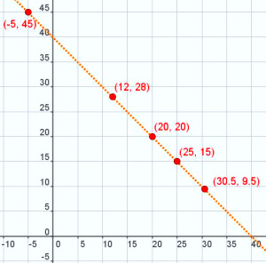

1.1. Ecuaciones con dos incógnitas
El siguiente titular apareció en el diario SPORT.es el día 3 de abril de 2010.
| Fuente: SPORT.es Fecha: 03/04/2010 |
Si traducimos al lenguaje algebraico la frase del subtítulo: "entre los dos delanteros han marcado 40 goles", al haber dos objetos (en este caso, dos jugadores) y dos cantidades asociadas a ellos (número de goles que ha marcado cada uno), necesitamos dos incógnitas.
Por tanto, si llamamos:
x: Número de goles que ha marcado Messi
la frase anterior traducida a lenguaje matemático quedaría de la siguiente forma: x + y = 40. Se trata de una ecuación (igualdad entre dos miembros) con dos incógnitas. ¿Ves como no es tan complicado?
Importante
Una ecuación lineal con dos incógnitas es una igualdad de la siguiente forma: ax + by = c, donde x e y son las incógnitas de la ecuación y a, b y c son números conocidos. Los valores a y b se llaman coeficientes y c se llama término independiente de la ecuación.
En el caso anterior, x + y = 40, serán a = 1, b = 1 y c = 40.
Las soluciones de la ecuación son pares de números que, al ser sustituidos en la ecuación, hacen que ambos miembros tengan el mismo valor (es decir, que se alcance el equilibrio).
Comprueba lo aprendido
Solución
Solución
Solución
 |
Para saber si una pareja de números es solución de una ecuación lineal con dos incógnitas basta con sustituir en la ecuación cada número por la incógnita correspondiente y comprobar si es cierta o no la igualdad numérica.
Acabamos de ver que los pares (12, 28), (20, 20) y (25, 15) son soluciones de la ecuación x + y = 40. Estos pares de puntos, además de cumplir la ecuación, tienen sentido en el contexto de la situación que planteamos, es decir, pueden ser los goles marcados por Messi e Ibrahimovic, respectivamente.
Pero hay otros pares de puntos que también cumplen la igualdad x + y = 40. Por ejemplo (-5, 45) ó (30'5, 9'5) también suman 40, pero no tienen sentido como goles marcados en un partido.
Nos planteamos entonces, ¿cuántos pares de puntos pueden ser solución de la ecuación lineal x + y = 40?
En la imagen de la derecha, en unos ejes coordenados, hemos representado los pares de puntos que hemos visto que son solución de x + y = 40. Para ello, el valor de x lo hemos colocado en el eje OX, y el de y en el eje OY.
A la vista de la imagen, ¿qué otros pares de puntos pueden ser solución de nuestra ecuación?
Importante
Dada una ecuación lineal con dos incógnitas, ax + by = c, siempre se cumple:
- Que sus soluciones, pares de valores (x, y), representan puntos del plano que están alineados, es decir, que están situados sobre la misma recta.
- Como una recta tiene infinitos puntos, una ecuación lineal con dos incógnitas también tiene infinitas soluciones.
Comprueba lo aprendido
"A estas alturas de la temporada el Real Madrid es el equipo más goleador de la Liga con 6 goles más que el F.C. Barcelona, que ocupa la segunda posición en la clasificación de equipos goleadores."
Retroalimentación
Verdadero
Retroalimentación
Falso
No es cierto. Veamos por qué.
Sabemos que la relación entre los goles marcados por ambos equipos viene dada por la ecuación: x = y + 6 , donde x: nº goles marcados por el Real Madrid e y: nº goles marcados por el F.C. Barcelona.
Si fuera cierto, entonces la pareja: (x, y)=(80, 73) sería una solución de la ecuación.
Pero, si sustituimos estos valores en la ecuación, vemos que no la satisfacen pues 80 ≠ 73 + 6, 80 ≠ 79.
Retroalimentación
Falso
No es cierto. Veamos por qué.
Sabemos que la relación entre los goles marcados por ambos equipos viene dada por la ecuación: x = y + 6 , donde x: nº goles marcados por el Real Madrid e y: nº goles marcados por el F.C. Barcelona.
En este caso, la pareja: (x, y)=(79, 73) sí que es una solución de la ecuación. Podemos decir que es una combinación goleadora posible, pero, con los datos que disponemos no podemos afirmar, con toda seguridad, que esta sea la única combinación posible.
Ello es debido a que una ecuación con dos incógnitas tiene infinitas soluciones.